Trying to be retro in 2026
Credit / Linktree /
About Me
Hey! I'm Luminara(She/They), though I usually go by Lumi.Online you can generally find me under the usernames FelisAraneae or LumiLovesYou.
Photos
|
Minecraft (trying) to run on an eMac |
A cool photo I took when it was super foggy |
|
A resource pack generated with Python to help with eMac performance |
My kitty :3 |
|
A mod manager for Cosmic Reach that I never finished |
Not sure what to put here to even it out so here's a filler image |
Blog
(Projects, concepts, and tips I want to share)|
The other day I was trying to find anything interesting to watch on YouTube and, of course, I couldn't. That caused me to stop and think about how much worse YouTube as a platform has been getting over the years. There's really no competitors to it, either. So that got me thinking: what if there was not only an alternative, but one based around the indie web? |
|
If you have Amazon Prime (even just a free trial) you can go to https://luna.amazon.com/claims/ to get games regularly! They give out free codes to games on other platforms(Usually GOG) you can claim, though usually they're not very good. Something though you can find actually really good stuff on there! |
|
A cool personal page from Maia that I took a lot of inspiration from while crafting my own! (Namely the usage of superscript and 88x31s)  |
See more
 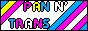 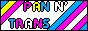 |
  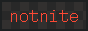 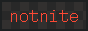    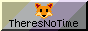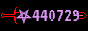 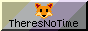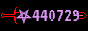 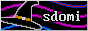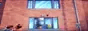 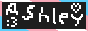 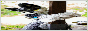 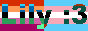 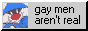 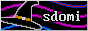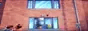 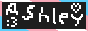 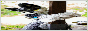 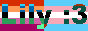 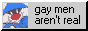    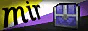 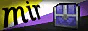   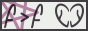 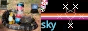 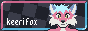 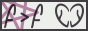 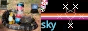 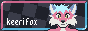 |
 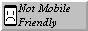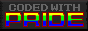 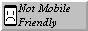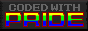 |